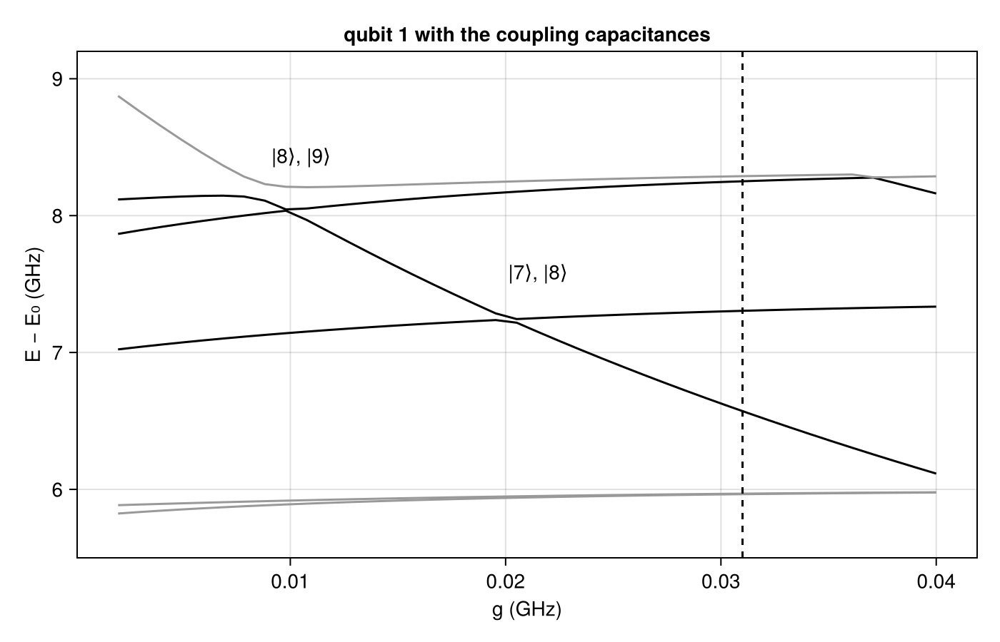

Tutorial: two coupled soft zero-pi qubits
This tutorial solves the two capacitively coupled soft zero-pi qubits of Liu, Weissler and Combes, Two-qubit gates for the soft 0-π qubit, arXiv:2609.16630. It builds a three-level tree, reads the coupled spectrum and the static ZZ rate, checks how both converge with the truncation, and sweeps the coupling capacitance through the level crossings the paper discusses. Following the paper, the circuit has no disorder, so only the θ and φ modes of each qubit take part.
The circuit
The paper's circuit (a) is two symmetric zero-pi qubits, each with two junctions, two superinductors, two large capacitors and a capacitance C_0 from each node to ground, coupled through two coupler islands that connect to all four nodes of each qubit. This circuit-quantization script builds it in the parameters of the paper's Table I, quantizes it in each qubit's θ, φ, ζ (the remaining directions are free and eliminated) and writes the spec:
import sympy as sym
import circuit_quantization as cq
from circuit_quantization import Branch, Circuit, Loops, quantize
# Parameters as in the paper's Table I: E_C^theta, E_C^phi of the uncoupled qubit (C_theta = 2C + 2C_J + C_0,
# C_phi = 2C_J + C_0), E_Cc of each coupling capacitor, E_C0 of each ground capacitor, E_L, E_J1, E_J2 (GHz).
ECt, ECp, ECc, EC0, EL = sym.symbols("E_Ctheta E_Cphi E_Cc E_C0 E_L", positive=True)
xJ = 2 * ECp * EC0 / (EC0 - ECp) # each junction's capacitance C_J (1/E adds like a capacitance)
xC = 2 * ECt * ECp / (ECp - ECt) # each large capacitor C
def zero_pi(q, a, b, c, d):
"""Qubit q on nodes a, b, c, d, with a capacitance C_0 from each node to ground (node 0)."""
EJ = sym.Symbol(f"E_J{q}", positive=True)
return [Branch(f"J{q}a", a, b, C=cq.ghz_to_farad(xJ), EJ=EJ),
Branch(f"J{q}b", c, d, C=cq.ghz_to_farad(xJ), EJ=EJ),
Branch(f"L{q}a", b, c, L=cq.ghz_to_henry(EL)),
Branch(f"L{q}b", d, a, L=cq.ghz_to_henry(EL)),
Branch(f"C{q}a", a, c, C=cq.ghz_to_farad(xC)),
Branch(f"C{q}b", b, d, C=cq.ghz_to_farad(xC))] + \
[Branch(f"C0_{n}", n, 0, C=cq.ghz_to_farad(EC0)) for n in (a, b, c, d)]
# Circuit (a): nodes 1, 4, 5, 8 couple to island 10 and nodes 2, 3, 6, 7 to island 9.
coupler = [Branch(f"Cc_{n}_{i}", n, i, C=cq.ghz_to_farad(ECc))
for i, nodes in ((10, (1, 4, 5, 8)), (9, (2, 3, 6, 7))) for n in nodes]
circuit = Circuit(zero_pi(1, 1, 2, 3, 4) + zero_pi(2, 5, 6, 7, 8) + coupler, ground=0)
# Each qubit's ring (closed by L<q>b) carries its external flux; the capacitive loops carry none.
fluxes = {name: 0 for name in Loops.from_circuit(circuit).names}
for q in (1, 2):
fluxes[f"L{q}b"] = cq.phase_to_weber(-sym.Symbol(f"varphi_ext{q}", real=True))
loops = Loops.from_tree(circuit, cq.default_tree(circuit), fluxes)
# Columns theta1, phi1, theta2, phi2, zeta1, zeta2 of the ten node fluxes, then the non-dynamical
# directions: Sigma1 - Sigma2, the two coupler-island combinations and the sum of all nodes (all free).
s = 1 / sym.sqrt(2)
M = sym.Matrix([[1, 1, s], [-1, -1, s], [-1, 1, -s], [1, -1, -s]]) / 2 # theta, phi, zeta of one qubit
Z = sym.zeros(10, 10)
for q, rows in ((0, slice(0, 4)), (1, slice(4, 8))):
Z[rows, 2 * q], Z[rows, 2 * q + 1], Z[rows, 4 + q] = M[:, 0], M[:, 1], M[:, 2]
Z[:, 6] = sym.Matrix([1, 1, 1, 1, -1, -1, -1, -1, 0, 0])
Z[:, 7] = sym.Matrix([0] * 8 + [1, -1])
Z[:, 8] = sym.Matrix([0] * 8 + [1, 1])
Z[:, 9] = sym.ones(10, 1)
res = quantize(circuit, loops, Z, ("c", "e", "c", "e", "h", "h", "fr", "fr", "fr", "fr"))
cq.save_spec(res, "two_soft_zero_pi.json", mode_names=["theta1", "phi1", "theta2", "phi2", "zeta1", "zeta2"],
subs={sym.Symbol("n_g3", real=True): sym.Symbol("n_g2", real=True)})The script writes the spec that this page loads (test/fixtures/generated/two_soft_zero_pi.json in the repository), here with each matrix row on one line:
using KronFreeCircuits, CairoMakie
json = read("two_soft_zero_pi.json", String)
print(replace(json, r"\[[^\[\]{}]*\]" => row -> replace(row, r"\s+" => " "))){
"format": "kronfree-spec",
"version": 1,
"units": "GHz",
"parameters": [ "E_Cc", "E_Ctheta", "E_Cphi", "E_C0", "E_L", "varphi_ext1", "varphi_ext2", "n_g1", "n_g2", "E_J1", "E_J2" ],
"modes": [
{
"name": "theta1",
"type": "c"
},
{
"name": "phi1",
"type": "e"
},
{
"name": "theta2",
"type": "c"
},
{
"name": "phi2",
"type": "e"
},
{
"name": "zeta1",
"type": "h"
},
{
"name": "zeta2",
"type": "h"
}
],
"E_C": [
[ "(2 * E_Cc .* E_Ctheta + E_Ctheta .^ 2) ./ (2 * E_Cc + 2 * E_Ctheta)", "0", "E_Ctheta .^ 2 ./ (2 * E_Cc + 2 * E_Ctheta)", "0", "0", "0" ],
[ "0", "E_Cc .* E_Cphi ./ (E_Cc + E_Cphi)", "0", "0", "0", "0" ],
[ "E_Ctheta .^ 2 ./ (2 * E_Cc + 2 * E_Ctheta)", "0", "(2 * E_Cc .* E_Ctheta + E_Ctheta .^ 2) ./ (2 * E_Cc + 2 * E_Ctheta)", "0", "0", "0" ],
[ "0", "0", "0", "E_Cc .* E_Cphi ./ (E_Cc + E_Cphi)", "0", "0" ],
[ "0", "0", "0", "0", "2 * E_C0 .* E_Cc .* E_Cphi .* E_Ctheta ./ (E_C0 .* E_Cc .* E_Cphi - E_C0 .* E_Cc .* E_Ctheta + E_C0 .* E_Cphi .* E_Ctheta + E_Cc .* E_Cphi .* E_Ctheta)", "0" ],
[ "0", "0", "0", "0", "0", "2 * E_C0 .* E_Cc .* E_Cphi .* E_Ctheta ./ (E_C0 .* E_Cc .* E_Cphi - E_C0 .* E_Cc .* E_Ctheta + E_C0 .* E_Cphi .* E_Ctheta + E_Cc .* E_Cphi .* E_Ctheta)" ]
],
"E_L": [
[ "0", "0", "0", "0", "0", "0" ],
[ "0", "2 * E_L", "0", "0", "0", "0" ],
[ "0", "0", "0", "0", "0", "0" ],
[ "0", "0", "0", "2 * E_L", "0", "0" ],
[ "0", "0", "0", "0", "E_L", "0" ],
[ "0", "0", "0", "0", "0", "E_L" ]
],
"flux_linear": [ "0", "E_L .* varphi_ext1", "0", "E_L .* varphi_ext2", "sqrt(2) * E_L .* varphi_ext1 / 2", "sqrt(2) * E_L .* varphi_ext2 / 2" ],
"n_g": [ "n_g1", "0", "n_g2", "0", "0", "0" ],
"cosines": [
{
"energy": "E_J1",
"omega": [ 1, 1, 0, 0, 0, 0 ],
"offset": "0"
},
{
"energy": "E_J1",
"omega": [ -1, 1, 0, 0, 0, 0 ],
"offset": "0"
},
{
"energy": "E_J2",
"omega": [ 0, 0, 1, 1, 0, 0 ],
"offset": "0"
},
{
"energy": "E_J2",
"omega": [ 0, 0, -1, 1, 0, 0 ],
"offset": "0"
}
],
"constant": "0",
"_generator": {
"package": "circuit-quantization",
"version": "0.2.0",
"branches": [ "C1a", "C1b", "C0_1", "C0_2", "C0_3", "C0_4", "C2a", "C2b", "C0_5", "C0_6", "C0_7", "C0_8", "Cc_1_10", "Cc_4_10", "Cc_5_10", "Cc_8_10", "Cc_2_9", "Cc_3_9", "Cc_6_9", "Cc_7_9", "J1a", "J1b", "J2a", "J2b", "L1a", "L1b", "L2a", "L2b" ],
"commit": "658e3c8f94b3e83066aaf92925b1dce9e2634d09",
"dirty": false,
"script": "test/fixtures/generate_specs.py"
},
"_comment": [
"Two symmetric soft zero-pis coupled by circuit (a) of Liu, Weissler, Combes, arXiv:2609.16630v1: qubits on nodes 1-4 and 5-8 (branches J<q>a, J<q>b, L<q>a, L<q>b, C<q>a, C<q>b), C0_<n> from each qubit node to ground 0, Cc_<n>_<i> from nodes 1, 4, 5, 8 to island 10 and from 2, 3, 6, 7 to island 9; built by the script on docs/src/tutorials/two_zero_pi.md.",
"Parameters are the paper's Table I: E_Ctheta, E_Cphi of the uncoupled qubit (C_theta = 2C + 2C_J + C_0, C_phi = 2C_J + C_0), E_Cc, E_C0, E_L shared, E_J1, E_J2.",
"The coupling g n_theta1 n_theta2 has g = 8 E_C[theta1, theta2]; the coupler also renormalizes E_C[theta_q, theta_q] and E_C[phi_q, phi_q] (paper eq:g_theta).",
"Non-dynamical: Sigma1 - Sigma2, the coupler-island directions and all-ones (all free).",
"Default (irrotational) flux assignment: each ring flux on L<q>b, flux_linear on phi_q and zeta_q.",
"Sector labels n_g1 (theta1) and n_g3 (theta2) renamed n_g1, n_g2."
]
}The θ block of E_C carries the coupling, and both diagonal entries are renormalized by the coupling capacitors; the junctions give E_Jq cos(±θ_q + φ_q), and each qubit's flux enters as flux_linear (circuit-quantization's default flux assignment, a gauge equivalent to the paper's cos(φ − φ_ext/2); this page works at zero flux).
spec = load_spec("two_soft_zero_pi.json")
[(m.name, m.type) for m in spec.modes]6-element Vector{Tuple{Symbol, Symbol}}:
(:theta1, :c)
(:phi1, :e)
(:theta2, :c)
(:phi2, :e)
(:zeta1, :h)
(:zeta2, :h)Each qubit (1 or 2) has three modes, named with its number:
theta, compact (:c): half the difference of the two junction phases, which areθ + φand−θ + φ; its offset charge isn_g1(orn_g2);phi, extended (:e): the junctions' common phase, which the inductors confine;zeta, harmonic (:h): an oscillator that decouples exactly in the symmetric circuit.
The parameters are the paper's Table I, in GHz: qubit 1 is the device of Gyenis et al. (see Tutorial: a soft zero-pi qubit), and qubit 2 has its E_J lowered by 10%. E_Ctheta and E_Cphi are the charging energies of the uncoupled qubit, E_Cc that of each coupling capacitor and E_C0 that of each ground capacitor:
θ = (E_Ctheta=0.092, E_Cphi=1.14, E_Cc=1.0, E_C0=1.491, E_L=0.377, E_J1=6.013, E_J2=5.412,
n_g1=0.0, n_g2=0.0, varphi_ext1=0.0, varphi_ext2=0.0)The coupler renormalizes each qubit's charging energies and adds the coupling g n_θ1 n_θ2, with g = 8 E_C[θ1, θ2]. The spec reproduces the paper's values: EC^θ drops by about 4% and EC^φ by about 50%, and g ≈ 0.031 GHz:
EC = [real(spec.E_C[i, j](θ)) for i in 1:4, j in 1:4] # theta1, phi1, theta2, phi2
(E_Ctheta=EC[1, 1], E_Cphi=EC[2, 2], g=8EC[1, 3])(E_Ctheta = 0.08812454212454211, E_Cphi = 0.5327102803738318, g = 0.031003663003662998)The tree
root (couples the qubits through g)
/ \
qubit 1 qubit 2
/ \ / \
(θ₁, φ₁) ζ₁ (θ₂, φ₂) ζ₂
leaf leaf leaf leaf- The
(θ, φ)leaf diagonalizes the two strongly coupled modes of one qubit together, θ in a charge basis and φ on a phase grid, and keeps itsklowest states. - Without disorder
ζis exactly decoupled. Its leaf keeps only its ground state, which removes it from the spectrum as the paper's two-mode model does. - Each qubit node combines its two leaves, and the root couples the qubits.
function zpf(spec, mode, θ) # zero-point phase width of a harmonic mode
i = findfirst(m -> m.name === mode, spec.modes)
return (2real(spec.E_C[i, i](θ)) / real(spec.E_L[i, i](θ)))^(1 / 4)
end
function tree(k; root_keep=30)
leaf(q) = Node([Symbol("theta$q") => ChargeBasis(20), Symbol("phi$q") => PhaseGrid(-8π, 8π, 401)];
compute=k + 4, keep=lowest(k))
zeta(q) = Node([Symbol("zeta$q") => FockBasis(8; phi_zpf=zpf(spec, Symbol("zeta$q"), θ))]; keep=lowest(1))
qubits = [Node([leaf(q), zeta(q)]; keep=lowest(k)) for q in 1:2]
return Node(qubits; compute=root_keep, keep=lowest(root_keep)), qubits
endEach leaf has 41 × 401 = 16 441 product states, and the root k². A root larger than 1000 states is solved iteratively, so it states how many eigenpairs to compute.
The spectrum
With k = 20 states per qubit:
root, qubits = tree(20)
sys, records = KronFreeCircuits.node_timings(() -> materialize(root, spec, θ))
[(modes=r.modes, dim=r.dim, solver=r.solver, kept=r.kept) for r in records]7-element Vector{@NamedTuple{modes::Vector{Symbol}, dim::Int64, solver::Symbol, kept::Int64}}:
(modes = [:theta1, :phi1], dim = 16441, solver = :ShiftInvert, kept = 20)
(modes = [:zeta1], dim = 8, solver = :Dense, kept = 1)
(modes = [:theta1, :phi1, :zeta1], dim = 20, solver = :Dense, kept = 20)
(modes = [:theta2, :phi2], dim = 16441, solver = :ShiftInvert, kept = 20)
(modes = [:zeta2], dim = 8, solver = :Dense, kept = 1)
(modes = [:theta2, :phi2, :zeta2], dim = 20, solver = :Dense, kept = 20)
(modes = [:theta1, :phi1, :zeta1, :theta2, :phi2, :zeta2], dim = 400, solver = :Dense, kept = 30)Qubit 1's own levels, read at its node, include the renormalization by the coupler:
E1 = energies(sys, qubits[1])
round.(E1[1:11] .- E1[1]; digits=4)11-element Vector{Float64}:
0.0
2.5797
3.4434
3.444
5.0259
5.9649
5.9689
6.5717
7.3045
8.2509
8.2882The logical states are |0_L⟩ = |0⟩, the ground state of the θ = 0 valley, and |1_L⟩ = |2⟩, the lowest state of the θ = π valley; |1⟩ is a θ excitation in the θ = 0 valley. dressed_state_string shows each dressed state's content in the two qubits' kept states, with physics indices from 0:
for n in 0:4
println(dressed_state_string(sys, n))
end|ψ₀⟩ = 1.0|0,0⟩
|ψ₁⟩ = 0.951|0,1⟩ − 0.31|1,0⟩
|ψ₂⟩ = 0.951|1,0⟩ + 0.31|0,1⟩
|ψ₃⟩ = 1.0|0,2⟩
|ψ₄⟩ = 1.0|0,3⟩The non-logical |1⟩ excitations of the two qubits are close in energy, and the coupling mixes them; the logical states have disjoint support, and |0,2⟩ is barely dressed.
Static ZZ and truncation
The static ZZ rate compares qubit 1's logical transition with qubit 2 in |0⟩ and in |2⟩: ZZ = (E_{2,2} − E_{0,2}) − (E_{2,0} − E_{0,0}). It comes from virtual transitions through higher qubit states, so it depends on how many states each qubit keeps. dressed_index finds the dressed state with the largest weight on a product of the qubits' kept states (1-based):
function zz(sys, root)
E = energies(sys)
i(l) = dressed_index(sys, root, l)
return (E[i((3, 3))] - E[i((1, 3))]) - (E[i((3, 1))] - E[i((1, 1))])
end
map((20, 40, 80, 120)) do k
r, _ = tree(k)
(k=k, ZZ_Hz=round(1e9 * zz(materialize(r, spec, θ), r); digits=1))
end((k = 20, ZZ_Hz = -187.8), (k = 40, ZZ_Hz = -180.3), (k = 80, ZZ_Hz = -171.3), (k = 120, ZZ_Hz = -171.1))The rate converges to a magnitude of 171 Hz, the value the paper gives. Because the logical states have disjoint support, it is much smaller than for transmon or fluxonium devices at a comparable coupling.
Sweeping the coupling capacitance
The coupling capacitance sets g and also renormalizes each qubit's charging energies, so qubit 1's levels move as C_c grows. Inverting g = 8 E_C[θ1, θ2] for E_Cc gives a sweep in g; previous= starts each point from the last solution:
a = 1 / θ.E_Ctheta
E_Cc(g) = (4 - g * a) / (g * a^2) # inverts g = 4 C_c/((a + C_c) a), C = 1/E_C
small, small_qubits = tree(12; root_keep=4) # only qubit 1's levels are read
gs = range(0.002, 0.04; length=40)
levels = let prev = nothing
map(gs) do g
s = materialize(small, spec, merge(θ, (E_Cc=E_Cc(g),)); previous=prev)
prev = s
E = energies(s, small_qubits[1])
E[1:11] .- E[1]
end
end
fig = Figure(size=(700, 450))
ax = Axis(fig[1, 1]; xlabel="g (GHz)", ylabel="E − E₀ (GHz)", title="qubit 1 with the coupling capacitances")
for n in 1:11
lines!(ax, gs, getindex.(levels, n); color=n in (8, 9, 10) ? :black : :gray60)
end
vlines!(ax, [8EC[1, 3]]; color=:black, linestyle=:dash)
text!(ax, 0.0215, 7.5; text="|7⟩, |8⟩", align=(:center, :bottom))
text!(ax, 0.0105, 8.35; text="|8⟩, |9⟩", align=(:center, :bottom))
ylims!(ax, 5.5, 9.2)
Levels |8⟩ and |9⟩ cross near g ≈ 0.01 GHz and |7⟩ and |8⟩ near g ≈ 0.02 GHz, as in the paper; the dashed line marks the operating point g ≈ 0.031 GHz.
Where next
- Tutorial: a soft zero-pi qubit solves one of these qubits with junction asymmetry and all three modes, and plots its wavefunctions.
- Trees and truncation covers the selection rules:
withinkeeps an energy window instead of a count, andconnectedkeeps the states a coupling reaches. - Solvers covers how
Auto()chooses a solver for each node.